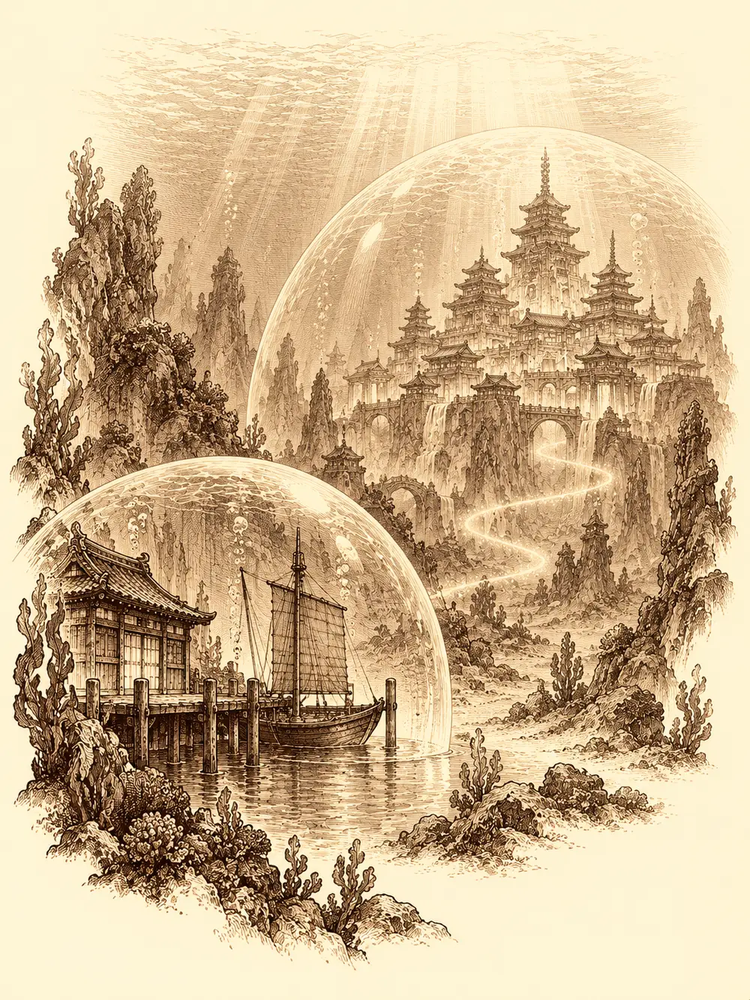

Capítulo 56
Diplomacia pasada por agua
Libro IV · Los guardianes del Oeste y del Este
En la base de Sho cada uno llenaba los días a su manera. Danifae seguía volviendo a la habitación de Jin cuando creía que nadie la miraba, y la esfera fría seguía sin aparecer. Katari pasaba las horas sentada con sus espíritus, hablando con lo que los demás no veían. Gur entrenaba con su sensei, el pequeño Kuma. Aka cumplía turnos de guardia con la espalda recta.
La llamada del castillo llegó con prisa. El shogun quería a los cazadores de inmediato.
Aka los condujo por los pasillos con paso marcial. Ante el estrado, la muchacha hincó una rodilla y anunció en voz alta que allí estaban los cazadores de Kuroto. Gur se presentó él solo como campeón del torneo, para lo que hiciera falta.
El shogun no estaba para ceremonias. Les recordó el asalto que había sufrido no hacía mucho una aldea pesquera cercana, la misma que había firmado con Maroxi el contrato del barco: criaturas del mar habían llegado buscando a una sirena refugiada entre los vecinos, y unos cazadores las habían rechazado. Luego señaló a un anciano que esperaba a un lado, escoltado por dos samuráis de armadura blanca y azul con ribetes dorados y motivos de olas y cuernos de dragón. El anciano vestía una túnica larguísima, más rica que la del propio shogun.
"Os presento al mariscal del rey dragón del mar".
Gur entendió rey marisco y así lo llamó durante el resto del día.
El mariscal habló con frialdad. Su majestad tenía dos peticiones. La primera, que se le devolviera la sirena fugitiva y que los responsables de la muerte de sus soldados firmaran un perdón, sellado por el propio shogun. La segunda, si la primera no se cumplía, eran las cabezas de esos responsables.
Danifae y Katari protestaron casi a la vez. Si los soldados habían atacado una aldea para llevarse por la fuerza a una refugiada, dijeron, los que tenían que pedir perdón eran ellos; quienes defendieron a los vecinos no habían hecho más que su deber. El mariscal explicó, con creciente impaciencia, que aquella aldea quedaba dentro de los dominios de su señor, que sus soldados habían ido a recuperar lo que le pertenecía y que, ante la negativa de los aldeanos, se habían visto obligados a usar la fuerza. Gur se ofreció a cortar él mismo las cabezas que hicieran falta.
"¿Hay en este grupo de cazadores alguien mínimamente inteligente para mantener una conversación seria?".
Gur se había acercado a uno de los samuráis para mirarle la armadura de cerca, y le preguntó si le enseñaba la espada. El guardia echó mano a la empuñadura. Aka le pidió a Gur un paso atrás, primer aviso, y Danifae se lo llevó del brazo. El shogun temblaba en su asiento como una hoja.
Danifae anunció que se iba a tomar una cerveza y echó a andar hacia la puerta. Una flecha se clavó en el suelo, delante de sus pies. Aka seguía con el arco tenso.
"La reunión no ha terminado. Hasta que el shogun no dé su permiso, no se va nadie de aquí".
El mariscal dio por terminada la audiencia: esperaría en su barco, en el embarcadero, hasta la noche, y no aceptaría otra opción. Se marchó con sus guardias, y en la sala quedó un silencio tenso, de cuerdas a punto de romperse.
El shogun se lo explicó cuando estuvieron solos. Aquel rey dragón era el ser más poderoso del mar del Oeste. Gobernaba las mareas, la lluvia y los vientos; podía arrasar toda la costa de Kuroto con un temporal si se lo proponía. No le convenía tenerlo de enemigo. Tampoco podía entregarle a la sirena a la fuerza, porque perdería la confianza de la aldea pesquera, que la protegía y que era un punto importante para el comercio. Necesitaba una solución diplomática.
Sus órdenes fueron claras. Acompañarían al emisario y negociarían directamente con el rey. Aka iría en representación del shogunato, con la diplomacia como prioridad. Nada de guerras. Nada de secuestros.
Danifae pidió un pincel y un papel. Escribió en él una sola palabra, perdón, y lo dobló con mucho cuidado.
En la taberna, mientras esperaban la noche, Danifae no le dirigió la palabra a Aka. Gur prefería sus árboles a las palabras difíciles, pero Katari lo convenció de que tal vez allí abajo necesitaran al campeón. Aceptó, y avisó de que, si alguno de aquellos le ponía la mano encima, no aguantaría más tonterías.
La drow se escabulló con la excusa de dormir. Fue primero al puerto y no encontró el barco del mariscal, de modo que se acercó al castillo. Los visitantes reales amarraban en un embarcadero privado, pegado a la muralla. Intentó colarse con un cuento sobre unas flechas que Aka le había mandado recoger, y el guardia le recordó que no podía dejar pasar a nadie sin orden oficial. Danifae siguió la muralla hasta un paseo junto al mar que terminaba en un rompeolas, se metió en el agua y nadó.
El barco del emisario era dorado y brillaba en la oscuridad del embarcadero. Trepó por el casco, resbaló en la madera mojada y el ruido puso en guardia al vigilante de cubierta. No intentó subir más. Sacó la daga, cortó la amarra y volvió nadando mientras el navío empezaba a apartarse del muelle.
Llegó empapada a la taberna. Katari la escuchó sin hacer preguntas: había querido investigar, dijo. La emisaria le pasó la mano por encima y el agua se le evaporó de la ropa. Gur, mientras tanto, había salido a talar.
Esa noche fueron todos al embarcadero, esta vez por la puerta, porque con Aka delante nadie les cerró el paso. El mariscal los esperaba con sus dos guardias. Danifae le tendió su papel. Él lo desdobló, leyó la palabra y tardó un momento en levantar la vista. Faltaba el sello del shogun. Faltaba todo lo demás. Gur se fijó en el barco. Alguien había vuelto a atar la soga cortada con un nudo, y a él, que no sabía nada de barcos, le pareció que así no podrían ir a ningún sitio. Se acercó delante de todos, tomó la cuerda y empezó a deshacer el nudo. Uno de los guardias desenvainó y le puso la espada delante. Aka tensó el arco contra el guardia. Danifae apareció junto a otro con la daga en el cuello.
"Calmémonos", dijo el mariscal. "No nos interesa a ninguno que esto acabe con violencia".
Gur soltó la cuerda. El emisario les recordó que no tenían la carta sellada, ni las cabezas, ni a la sirena. Lo único que se podía hacer ya era ir a hablar con el rey en persona. Irían juntos.
Les entregó una caja. Dentro había tres esferas, una verde, una amarilla y una azul. Eran la llave del barco, explicó, y tendrían que averiguar ellos mismos cómo usarla. Como pista, el mariscal recitó una frase: la luz guía, el viento mueve, la rueda controla la dirección.
El navío tenía tres huecos. Uno en el farol de proa, otro en el mástil y otro en el timón. Probaron. Tras algún titubeo, la amarilla fue al farol, la verde al mástil y la azul al timón. El farol se encendió. La vela se hinchó sin que soplara viento. El timón empezó a girar solo.
Sobre el agua oscura apareció un camino de luz turquesa que serpenteaba mar adentro. El barco lo siguió sin que nadie lo gobernara, y una burbuja transparente empezó a cerrarse a su alrededor. Cuando el camino terminó, el navío se hundió. Atravesaron la superficie sin mojarse. Vieron pasar bancos de peces y corales. Gur preguntó si la burbuja se rompía con facilidad y, sin esperar respuesta, metió el filo del hacha. La hoja atravesó la pared y salió mojada al otro lado, pero la burbuja siguió entera.

Al fondo se encendió un resplandor azul que fue tomando forma: un castillo de pagodas superpuestas, cristalino, encerrado bajo otra cúpula. El barco se posó en un embarcadero y la burbuja desapareció.
Antes de bajar, Danifae intentó arrancar la esfera del timón. Estaba incrustada en la madera y no se movió ni con la punta de la daga. Tuvo que dejarla.
El palacio era de una materia que nadie supo nombrar. Podía ser cristal, hielo o zafiro, y despedía una luz azul que lo llenaba todo como un día sin sol. Sonaban arpas y tambores. Los sirvientes iban vestidos como nobles y tenían orejas puntiagudas y cuernos pequeños. Al fondo de la gran sala, bajo una enorme cabeza de dragón esculpida en lo alto, colgaban unas cortinas rojas, y delante de ellas aguardaban dos guardias. Katari se acercó los labios al hombro y le susurró algo en celestial a una araña diminuta que nadie más vio. La araña se descolgó y se perdió entre las columnas.
La voz que salió de detrás de la cortina era grave y tenía mucho eco. Les dio la bienvenida y les preguntó qué los traía ante él. Aka respondió que tenía órdenes de hablar directamente con el rey y que necesitaba pruebas de que fuera él. La voz se negó: alguien de su rango no se dejaba ver por simples peones. Gur se sentó en el suelo, resignado: ya no sabía a qué rey hacer caso.
La voz repitió sus exigencias. Una sirena se había escapado de aquel palacio; sus soldados la habían seguido hasta una aldea; los cazadores los habían masacrado. Quería un perdón con la fugitiva, o las cabezas. Los cazadores volvieron a discutir quién era responsable de qué. Danifae propuso que los contrataran: por un precio, ellos le devolverían a la sirena y todo el mundo quedaría tranquilo.
La sombra detrás de la cortina se puso en pie y gritó. El sonido rebotó por toda la sala de cristal. Los sirvientes se quedaron inmóviles.
"Ya que no vamos a llegar a ningún entendimiento, tendré que conformarme con vuestras cabezas. Apresadlos".
El mariscal retrocedió. No llegó lejos. Danifae saltó, lo agarró por detrás y le puso la daga en la garganta.
"¿Tan importante es este señor?".
"¿Crees que no tengo más súbditos?".
Le cortó el cuello.
Gur dejó caer al suelo la madera que llevaba a cuestas y entró en furia.
La drow abrió la pelea con un resplandor de fuego mágico que dejó a uno de los guardias brillando, marcado para todos los golpes. Aka soltó dos flechas a la vez contra él. Gur cayó sobre el otro con el hacha. Uno de los guardias se desplomó pronto, y Danifae corrió hasta la cortina y la apartó de un tirón.
Detrás había un hombre con tridente que la miró con los ojos brillantes. Contraatacó con el agua misma: hacía brotar chorros que atrapaban y sujetaban como manos, golpeaba con una fuerza que se metía dentro de la cabeza y hacía caer rayos sobre quien se le acercaba. Varios quedaron aturdidos. Los cazadores tardaron en entender por qué sus golpes no entraban del todo, hasta que vieron que, a los lados de la sala, dos columnas rematadas en cabezas de dragón brillaban cada vez que el gobernante se defendía. Parte de su protección no venía de él.
Katari mantuvo vivo al grupo. Llamó a su espíritu de unicornio, curó a quien caía y, cuando los pilares se volvieron un problema, convocó cuatro cocodrilos y los colocó entre las columnas y sus compañeros, tapando aquellas cabezas de dragón como quien tapa una lámpara. El agua del príncipe atrapó a Gur y lo dejó al borde de caer; el orco se mantuvo en pie a fuerza de rabia y siguió atacando. En un momento agarró al rival por la cintura, lo levantó y lo lanzó hacia atrás por encima de su cabeza con la idea de estrellarlo contra el último guardia. El gobernante cayó al suelo; el guardia se apartó a tiempo.
Aka y Danifae no aflojaron, y entre las dos lo dejaron de rodillas, sin fuerzas para levantarse. Aka guardó el arco, sacó sus dos hoces de mano y se las cruzó en el cuello.
"Por amenazar al shogun".
Una voz los detuvo. De la pared del fondo, sobre la cabeza del dragón, empezó a caer una cascada, y en el agua se formó la imagen de un anciano imponente.
"Parad. Os suplico que perdonéis a mi hijo".
Aka no apartó las hojas. Preguntó por qué debía hacerlo, después de todas las órdenes absurdas que habían recibido. El verdadero rey dragón les pidió perdón en nombre de aquel estúpido. En su ausencia, el príncipe había ocupado el trono y sus súbditos no habían hecho más que obedecerle. Si le perdonaban la vida, él se encargaría de darle el escarmiento que merecía.
Los cazadores quisieron garantías por escrito, con sello. El rey les ofreció algo mejor: la Perla del mar, para que la entregaran al shogun como símbolo de paz y la usaran para pedir su ayuda si algún día la necesitaban. Aka la examinó con desconfianza y un resplandor rojo volvió a encenderse bajo su ropa. La perla estaba encantada. Eso no la convertía en una trampa, pero la muchacha la tomó con cuidado.
El príncipe, desde el suelo, protestó que aquellos humanos no se merecían la perla. Un golpe en la nuca lo dejó inconsciente. Sobre la sirena, el rey fue escueto: él se ocuparía. Tenía que informarse de muchas cosas que habían pasado durante su ausencia.
Gur quería el barco que bajaba al fondo del mar sin que nadie se ahogara. Danifae también lo quería. El rey se negó a dárselo en propiedad; prometió prestarles sus barcos siempre que los pidieran por medio de la perla, pero aquel no se lo quedarían. La drow insistió hasta que el rey le advirtió que se estaba pasando. Al final aceptó compensarlos por las molestias. Se habló de un barco para Katari y de un arma grande para Gur, una espada enorme para que todos vieran lo fuerte que era, que el rey prometió buscar. Y hubo dinero: quinientas monedas de oro para cada uno, que aparecieron en sus bolsas sin que nadie las viera llegar.
Antes de marcharse, Gur pasó junto al príncipe tendido y le dio una colleja, como las que Corco le daba a él.
"Respeta a tus mayores".
El shogun los esperaba nervioso. Aka hincó la rodilla y le ofreció la perla con las dos manos. Le contó la artimaña del hijo, la aparición del padre y la alianza del rey de los mares. El gobernante soltó el aire que llevaba horas guardando. Habían pasado de una posible guerra a tener al rey dragón como aliado. Esa noche habría un banquete en su honor.
Gur levantó la mano. Había una señora y una niña pequeña que vivían mal, dijo, y quería llevarles unas camas. El shogun encontró la petición extraña, pero le ofreció que el carpintero real trabajara junto al herrero en ellas. Gur aceptó encantado.
Danifae, en cambio, quería hablar de dinero. Todos aquellos trabajos para el reino y ninguna paga fija. El shogun le dijo que tendría que estudiar los contratos de los cazadores antes de decidir nada, y mientras tanto ofreció a sus médicos para atender las heridas. No prometió más.
Los compañeros de pelotón de Aka la esperaban a la salida. Le dieron una caja decorada y, dentro, un pañuelo bordado con pétalos, por su primera misión. La muchacha lo sostuvo entre los dedos sin saber qué decir. Nadie miraba a la drow. Danifae aprovechó para probar la cerradura de una puerta del palacio que no le correspondía. No se abrió.